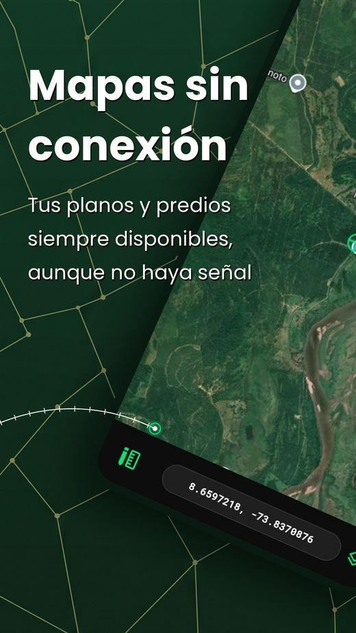
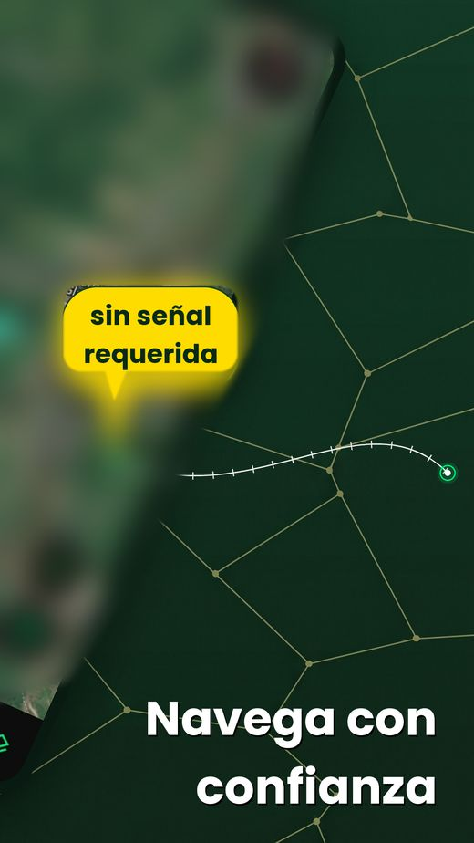
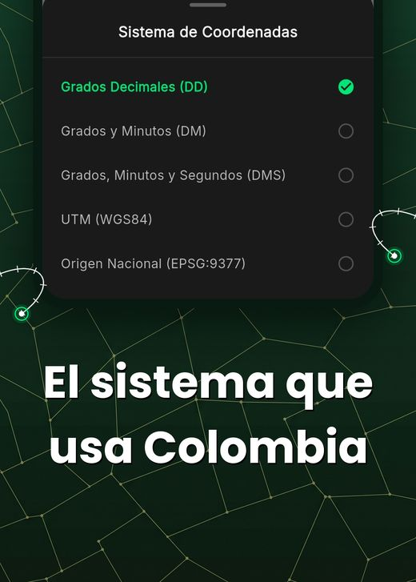
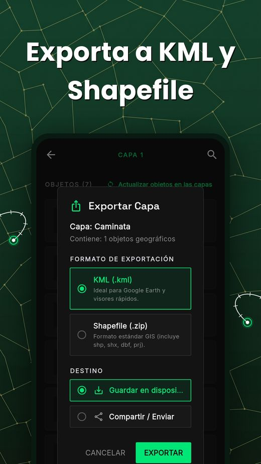
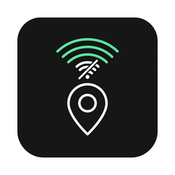
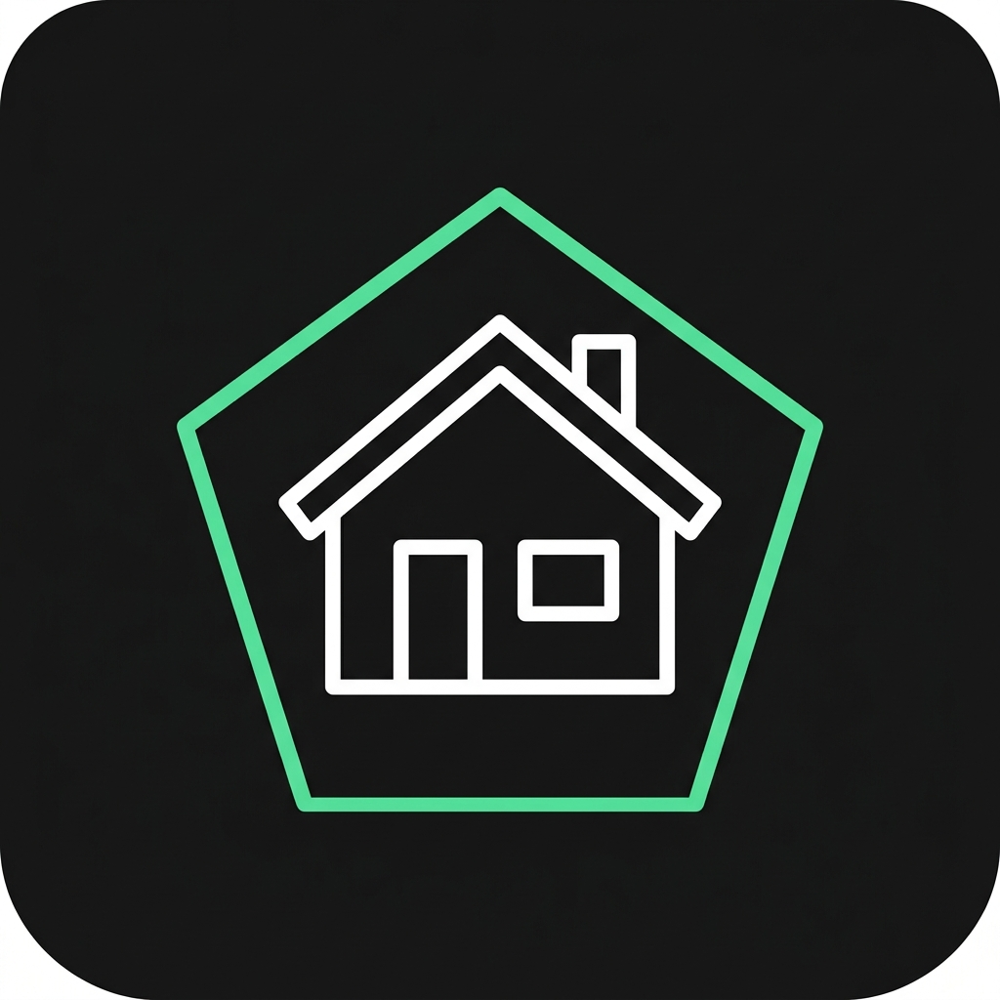
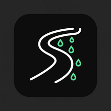

Levanta y mide tus predios, en el sistema que usa Colombia.
Lindero es la app GIS de bolsillo para el campo: navega sobre tus GeoPDF y mapas offline, marca y mide linderos con precisión, e importa o exporta KML y Shapefile — sin depender de señal ni de internet.




Tus mapas, disponibles aunque no haya cobertura.
Todo lo que necesitas para trabajar un predio, en un solo mapa
Pensada para el terreno real: fincas, vías rurales y zonas sin cobertura. Nada de esto depende de tener internet.

Mapas sin conexión
Descarga tus mapas y GeoPDF una sola vez; úsalos después en cualquier finca, aunque no haya señal.
Calibra tus GeoPDF
Importa los planos que ya tienes en PDF y ubícalos sobre el mapa en segundos, con tu posición GPS real.
Coordenadas de Colombia
Trabaja en Origen Nacional, Magna-Sirgas Bogotá, UTM o WGS84 — cambia de sistema sin perder precisión.
Importa y exporta KML/Shapefile
Trae capas existentes desde otros programas o comparte tus levantamientos en formatos estándar GIS, listos para Google Earth o tu software favorito.
De la finca al archivo GIS, en cuatro pasos
Carga tu mapa
Importa un GeoPDF, mapa satelital o tu plano existente antes de salir a campo.
Navega sin señal
Ubícate por GPS sobre el mapa descargado, sin depender de datos móviles.
Marca y mide
Traza linderos, calcula áreas y distancias, y anota puntos de interés en el terreno.
Importa y exporta
Trae capas KML o Shapefile que ya tengas, o genera las tuyas y envíalas directo desde el celular a tu equipo o software GIS.
Hecha para quienes trabajan la tierra, no para turistas
Lindero nace de necesidades reales de campo en Colombia, no de un caso de uso genérico.
Topógrafos y agrimensores
Verifica linderos y coordenadas en el sistema oficial colombiano directo desde el terreno.

Fincas y haciendas
Administra lotes, vías internas y áreas de cultivo sin depender de cobertura celular.

Contratistas de vías y riego
Registra avances de obra, tramos de vía y sistemas de riego con coordenadas exactas.
El sistema de coordenadas que de verdad se usa en Colombia
Ningún mapa genérico habla el idioma de un topógrafo colombiano. Lindero sí: cambia entre sistemas sin conversiones manuales ni errores de precisión.
Lleva Lindero contigo a la próxima visita de campo
Descárgala gratis desde Google Play y empieza a levantar tus predios sin señal, en el sistema de coordenadas de Colombia.